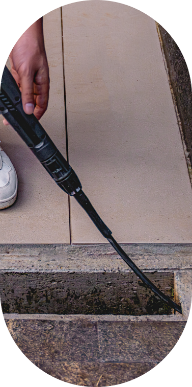
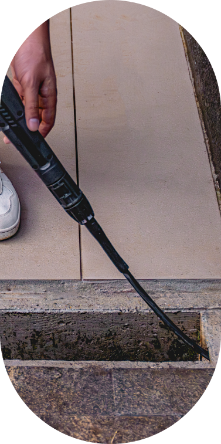

Desobstruidora e
Lavadora de Alta Pressão
WL 4000
Poder de limpeza
profissional para suas tarefas!
Limpeza profissional para suas tarefas!
Superar desafios de limpeza profissional com determinação exige resistência. Em ambientes onde esforço precisa ser máximo, a nova lavadora se destaca como a aliada perfeita para eliminar impurezas e manchas com ótimo desempenho.
A rotina exige agilidade, potência e ousadia para uma limpeza menos cansativa.
Pressão 1950 PSI
Alta pressão que garante limpeza
profunda em várias superfícies com
facilidade.
Vazão de 420 L/H
Limpeza eficiente em veículos,
calçadas e até em áreas extensas,
com economia de água e tempo.
Uso profissional
Perfeita para eliminar impurezas
e manchas com ótimo desempenho,
eficiência e sem esforço.
Eficiência em dose dupla
Explore todo poder de limpeza que uma lavadora WAP profissional, equipada com mangueira desobstruidora, pode oferecer. Com ela, é possível remover sujeiras dos mais variados tipos com facilidade, além de desentupir canos, calhas e tubulações utilizando jatos de água potentes.
Calhas
Canos
Banheiros
 

Limpeza completa, potente e
de alta performance
Pressão e vazão máximas para
enfrentar qualquer desafio
Poder de limpeza para sua rotina
Com uma potência de 2000W, vazão máxima de 420L/h e pressão máxima de 1950 PSI, a Desobstruidora e Lavadora de Alta Pressão WAP WL 4000 oferece poderosos jatos de água capazes de eliminar facilmente sujeiras, graxa entre outros resíduos. Alimentada por um motor de indução de alta eficiência, ela é a solução para demandas de limpeza profissional intensas, pois garante durabilidade e desempenho consistentes mesmo durante as tarefas mais exigentes.
Com um clique, você transforma as tarefas de limpeza em experiências descomplicadas.
Alcança até 5 metros sem trocar de tomada + 3 metros de extensão, a mangueira de alta pressão torna a limpeza prática e você ganha muito mais autonomia.
Perfeita para eliminar impurezas e manchas com ótimo desempenho, eficiência e sem esforço.
Alcança até 5 metros sem trocar de tomada + 3 metros de extensão, a mangueira de alta pressão torna a limpeza prática e você ganha muito mais autonomia.
Os jatos oferecem máxima eficiência. Com uma pressão de 1750 PSI, os bicos leque e concentrado garantem que até as sujeiras mais difíceis sejam removidas com facilidade.
Projetado para proporcionar maior controle aos usuários, o sistema interromper a pressão, desligando o motor da lavadora de alta pressão quando o gatilho é solto.
Projetados para otimizar a limpeza, os jatos oferecem máxima eficiência. Com uma pressão de 1750 PSI, os bicos leque e concentrado garantem que até as sujeiras mais difíceis sejam removidas com facilidade.
Projetado para proporcionar maior controle e eficiência durante o uso, o sistema eletrônico “Stop Total” corta totalmente a água e desliga o motor quando o gatilho é solto.
WL 4000: Escolha inteligente que faz a diferença
Sua opção por um consumo consciente faz toda diferença para o planeta e para a economia. Enquanto uma mangueira convencional pode consumir até 30 litros de água por minuto, a Desobstruidora e Lavadora de Alta Pressão WAP gasta apenas 4,5 litros por minuto, proporcionando resultados de limpeza impressionantes sem desperdício.
Sem complicação durante a remoção de sujeiras e detritos, o filtro com engate rápido facilita a conexão da mangueira.
Para proporcionar conforto durante a limpeza, a mangueira de alta pressão possui 3 metros de extensão.
A extensão do cabo de alimentação alcança até 5 metros sem trocar de tomada, proporcionando mobilidade à rotina de lavagem dos ambientes.
São diversos tipos de jatos de pressão para atender a várias necessidades de limpeza com jatos concentrados e em leque.
O stop total é projetado para proporcionar maior controle aos usuários, o sistema interromper a pressão, desligando o motor quando o gatilho é solto.
-
 Projetado para proporcionar maior controle aos usuários, o ‘Stop Total’ interromper a pressão, desligando o motor da lavadora de alta pressão quando o gatilho é solto.
Projetado para proporcionar maior controle aos usuários, o ‘Stop Total’ interromper a pressão, desligando o motor da lavadora de alta pressão quando o gatilho é solto.
IDEAL PARA LIMPEZAS EM


Descubra o segredo de uma
limpeza com mais performance!
Transforme a rotina de limpeza em experiências rápidas e eficientes com os jatos poderosos da Desobstruidora e Lavadora de Alta Pressão WAP WL 4000! Combine potência, acessórios funcionais e economia para remover sujeiras como um profissional.